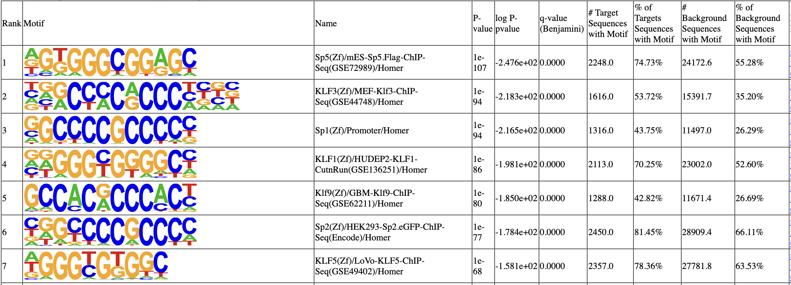
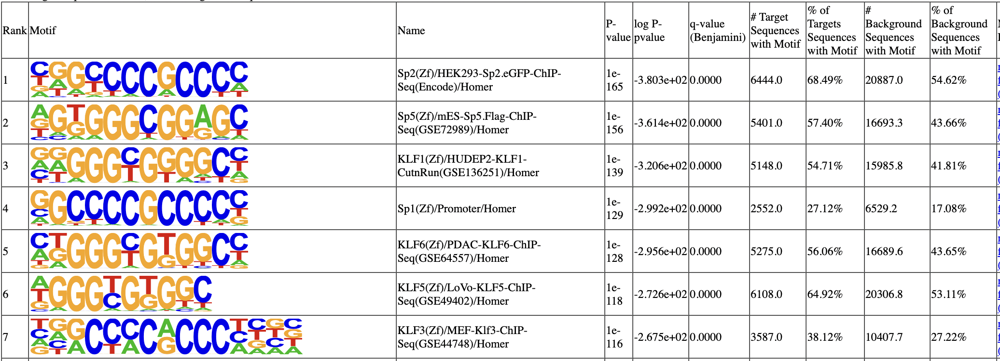

Tutorial: K562 HCT116 SP1 single-cell calling cards data.¶
In this tutorial, we will analyze the binding of the transcription factor Sp1 in K562 and HCT116 cell lines. These data are generated using single-cell calling cards (scCCs). The data is from Moudgil et al., Cell. (2020) and can be downloaded from GEO.
We will cover how to call TF peaks using a background file, annotate these peaks, compare them with Chip-seq reference data, and perform a differential peak analysis.
[1]:
import pycallingcards as cc
import numpy as np
import pandas as pd
import scanpy as sc
from matplotlib import pyplot as plt
plt.rcParams['figure.dpi'] = 150
We start by reading the qbed datafile. In this file, each row represents a Sp1-directed insertion and columns indicate the chromosome, start point and end point, reads number, the direction and cell barcode of each insertion. For example, the first row tells us the first insertion is on Chromosome 1 in a TTAA site located at genomic coordinates 30116 to 30120. There are 12 reads supporting this insertion, which maps to the negative strand of the genome. The cell barcode is CCCAATCCATCGGTTA-1. Note that the cell barcode allows us to connect this insertino to scRNA-seq data collected from the same cell.
Use cc.rd.read_qbed(filename) to read your own ccf data.
[2]:
# read in experiement data
HCT116_SP1 = cc.datasets.SP1_K562HCT116_data(data = "HCT116_SP1_qbed")
HCT116_SP1
[2]:
| Chr | Start | End | Reads | Direction | Barcodes | |
|---|---|---|---|---|---|---|
| 0 | chr1 | 30116 | 30120 | 5 | - | CCCAATCCATCGGTTA-1 |
| 1 | chr1 | 34568 | 34572 | 3 | - | CCTTCGAAGGGCTTCC-1 |
| 2 | chr1 | 36736 | 36740 | 29 | + | ACGAGCCGTATAGGTA-1 |
| 3 | chr1 | 42447 | 42451 | 3 | - | CTCTACGTCGGAGCAA-1 |
| 4 | chr1 | 89697 | 89701 | 119 | - | AGCTCTCGTTTGTTTC-1 |
| ... | ... | ... | ... | ... | ... | ... |
| 77205 | chrY | 25518788 | 25518792 | 2 | + | TGGGCGTTCGAACGGA-1 |
| 77206 | chrY | 56987633 | 56987637 | 13 | + | CAGTCCTAGGCACATG-1 |
| 77207 | chrY | 57080855 | 57080859 | 17 | + | CGGAGCTCATCGACGC-1 |
| 77208 | chrY | 57080855 | 57080859 | 7 | + | GTAACGTAGTTACGGG-1 |
| 77209 | chrY | 57080855 | 57080859 | 9 | + | TCAGCAAGTTGAACTC-1 |
77210 rows × 6 columns
[3]:
# read in backgound data
HCT116_brd4 = cc.datasets.SP1_K562HCT116_data(data="HCT116_brd4_qbed")
HCT116_brd4
[3]:
| Chr | Start | End | Reads | Direction | Barcodes | |
|---|---|---|---|---|---|---|
| 0 | chr1 | 89697 | 89701 | 14 | + | TCTGAGACAATGGTCT-1 |
| 1 | chr1 | 89697 | 89701 | 8 | + | CAGCGACCAAATACAG-1 |
| 2 | chr1 | 203932 | 203936 | 99 | + | TTCTCCTTCTACTTAC-1 |
| 3 | chr1 | 204063 | 204067 | 5 | - | TGTTCCGGTGTAAGTA-1 |
| 4 | chr1 | 204063 | 204067 | 7 | - | CAAGATCTCGACCAGC-1 |
| ... | ... | ... | ... | ... | ... | ... |
| 37769 | chrY | 18037315 | 18037319 | 9 | - | GCAGTTAAGATCTGAA-1 |
| 37770 | chrY | 24036504 | 24036508 | 168 | + | GCAGTTAAGATCTGAA-1 |
| 37771 | chrY | 24036504 | 24036508 | 508 | + | CATATGGCAGCCAGAA-1 |
| 37772 | chrY | 25633622 | 25633626 | 13 | - | GCAGTTAAGATCTGAA-1 |
| 37773 | chrY | 25633622 | 25633626 | 32 | - | CATATGGCAGCCAGAA-1 |
37774 rows × 6 columns
We first need to call peaks in order to find candidate SP1 binding sites. There are three different methods (CCcaller, MACCs, Blockify) available in Pycallingcards. Here, we will use MACCs to call peaks. The appropriate reference genome for these data is human(‘hg38’). The window_size parameter is the most important parameter for MACCs, it is highly related to the length of a peak. A value of 1000-2000 is recommended for most sequence-specific TFs. step_size is another important parameter and it controls whether two nearby clusters of insertions are called as one peak or split into two peaks. 500-800 is good for step_size. pvalue_cutoffTTAA is the pvalue cutoff for TTAA data and pvalue_cutoffbg is the pvalue cutoff for the background ccf data. Normally, the setting for pvalue_cutoffbg is considerably higher than pvalue_cutoffTTAA. pvalue_cutoffbg is recommended to be 0.1 and pvalue_cutoffTTAA is recommended from 0.001 to 0.05. pseudocounts is advised to be 0.1-1.
[4]:
peak_data_HCT116 = cc.pp.call_peaks(HCT116_SP1, HCT116_brd4, method = "MACCs", reference = "hg38", window_size = 2000, step_size = 500,
pvalue_cutoffTTAA = 0.001, pvalue_cutoffbg = 0.1, lam_win_size = None, pseudocounts = 0.1, record = True, save = "peak_HCT116.bed")
peak_data_HCT116
For the MACCs method with background, [expdata, background, reference, pvalue_cutoffbg, pvalue_cutoffTTAA, lam_win_size, window_size, step_size, extend, pseudocounts, test_method, min_insertions, record] would be utilized.
100%|██████████| 25/25 [00:43<00:00, 1.75s/it]
[4]:
| Chr | Start | End | Center | Experiment Insertions | Background insertions | Reference Insertions | pvalue Reference | pvalue Background | Fraction Experiment | TPH Experiment | Fraction background | TPH background | TPH background subtracted | pvalue_adj Reference | |
|---|---|---|---|---|---|---|---|---|---|---|---|---|---|---|---|
| 0 | chr1 | 906689 | 907160 | 906957.0 | 5 | 0 | 3 | 3.099334e-09 | 1.546531e-04 | 0.000065 | 6475.845098 | 0.000000 | 0.000000 | 6475.845098 | 3.371990e-06 |
| 1 | chr1 | 999921 | 1000324 | 1000121.0 | 20 | 0 | 1 | 0.000000e+00 | 0.000000e+00 | 0.000259 | 25903.380391 | 0.000000 | 0.000000 | 25903.380391 | 0.000000e+00 |
| 2 | chr1 | 1156947 | 1157863 | 1157660.0 | 11 | 0 | 2 | 0.000000e+00 | 1.274899e-09 | 0.000142 | 14246.859215 | 0.000000 | 0.000000 | 14246.859215 | 0.000000e+00 |
| 3 | chr1 | 1692740 | 1693542 | 1693339.0 | 6 | 0 | 3 | 5.135270e-11 | 1.546531e-04 | 0.000078 | 7771.014117 | 0.000000 | 0.000000 | 7771.014117 | 7.604315e-08 |
| 4 | chr1 | 1744492 | 1746808 | 1746605.0 | 11 | 0 | 7 | 0.000000e+00 | 1.274899e-09 | 0.000142 | 14246.859215 | 0.000000 | 0.000000 | 14246.859215 | 0.000000e+00 |
| ... | ... | ... | ... | ... | ... | ... | ... | ... | ... | ... | ... | ... | ... | ... | ... |
| 3003 | chrY | 1245503 | 1247177 | 1245703.0 | 5 | 0 | 7 | 1.652897e-09 | 4.678840e-03 | 0.000065 | 6475.845098 | 0.000000 | 0.000000 | 6475.845098 | 2.056405e-06 |
| 3004 | chrY | 1280372 | 1281989 | 1281786.0 | 5 | 0 | 3 | 1.426995e-09 | 4.678840e-03 | 0.000065 | 6475.845098 | 0.000000 | 0.000000 | 6475.845098 | 1.828173e-06 |
| 3005 | chrY | 1586317 | 1587733 | 1587530.0 | 7 | 0 | 8 | 3.370637e-13 | 1.546531e-04 | 0.000091 | 9066.183137 | 0.000000 | 0.000000 | 9066.183137 | 6.766326e-10 |
| 3006 | chrY | 2391936 | 2392440 | 2392237.0 | 6 | 1 | 2 | 1.985434e-11 | 9.958372e-02 | 0.000078 | 7771.014117 | 0.000026 | 2647.323556 | 5123.690561 | 3.329699e-08 |
| 3007 | chrY | 2608793 | 2610054 | 2608993.0 | 8 | 0 | 2 | 2.775558e-15 | 1.546531e-04 | 0.000104 | 10361.352156 | 0.000000 | 0.000000 | 10361.352156 | 6.730626e-12 |
3008 rows × 15 columns
In order to tune parameters for peak calling, we advise looking at the data and evaluating the validity of the called peaks. The default settings are recommended, but for some TFs, adjacent peaks may be merged that should not be, or, alternatively, peaks that should be joined may be called separately.
Below, we plot the scCC data in HCT116 cells for a region in chromosome 1. The top track displays the locations of Sp1-directed (red) and background (grey) transpositions and their read counts. Each dot represents an insertion and the height is log(reads+1). The middle track plots the insertion density. The third track represents the reference genes and peaks. Finally, the last track represents peak calls. Below you can see that regions with high densities of insertions are accurately called as Sp1 binding sites.
[5]:
cc.pl.draw_area("chr1",999921,1000324,20000,peak_data_HCT116, HCT116_SP1, "hg38", HCT116_brd4, font_size=2,
figsize = (30,10), peak_line = 1, save = False, plotsize = [1,1,4], example_length = 1000)
We can also visualize our data directly in the WashU Epigenome Browser. This can be useful for overlaying your data with other published datasets. Notice that this link only valid for 24hrs, so please rerun it if you want to use it.
[6]:
qbed = {"SP1":HCT116_SP1, "Brd4": HCT116_brd4}
bed = {"peak":peak_data_HCT116}
cc.pl.WashU_browser_url(qbed = qbed,bed = bed,genome = 'hg38')
All qbed addressed
All bed addressed
Uploading files
Please click the following link to see the data on WashU Epigenome Browser directly.
https://epigenomegateway.wustl.edu/browser/?genome=hg38&hub=https://companion.epigenomegateway.org//task/cb339e5b2d8c774345b7cf372cf4f97c/output//datahub.json
Pycallingcards can be used to visual peak locations acorss the genome to see that the distribution of peaks is unbiased and that all chromosomes are represented.
[7]:
cc.pl.whole_peaks(peak_data_HCT116, reference = "hg38", figsize=(100, 70), height_scale = 1.7)

We can then analyze the scCC Sp1 peaks to see if there is an enrichment of ChIP-seq signal at these locations using a reference Chip-seq dataset of SP1 binding in HCT116 from ENCSR000BSF (use the bigWig file ENCFF587ZMX generated by it).
Download the data, if needed, with:
!wget https://www.encodeproject.org/files/ENCFF587ZMX/@@download/ENCFF587ZMX.bigWig
We first calculate the signal of the Chip-seq signal around the peak.
[8]:
mtx_HCT116 = cc.pl.calculate_signal(peak_data_HCT116,
chipseq_signal = "ENCFF587ZMX.bigWig")
100%|██████████| 3008/3008 [00:14<00:00, 200.91it/s]
Visualize it by the plotting the signal values.
[9]:
cc.pl.signal_plot(mtx_HCT116, alpha = 0.05, figsize=(6, 4))
Visualized by the plotting the signal heatmap plot.
[10]:
cc.pl.signal_heatmap(mtx_HCT116,pad = 0.035)
We can now use HOMER to call motifs. We hope to find the canonical Sp1 motif enriched under the call peaks.
[11]:
cc.tl.call_motif("peak_HCT116.bed",reference ="hg38",save_homer = "Homer/peak_HCT116",
homer_path = "/home/juanru/miniconda3/bin/", num_cores=12)
Peak data peak_HCT116.bed is used here.
Position file = peak_HCT116.bed
Genome = hg38
Output Directory = Homer/peak_HCT116
Fragment size set to 1000
Using 12 CPUs
Will not run homer for de novo motifs
Found mset for "human", will check against vertebrates motifs
Peak/BED file conversion summary:
BED/Header formatted lines: 3008
peakfile formatted lines: 0
Peak File Statistics:
Total Peaks: 3008
Redundant Peak IDs: 0
Peaks lacking information: 0 (need at least 5 columns per peak)
Peaks with misformatted coordinates: 0 (should be integer)
Peaks with misformatted strand: 0 (should be either +/- or 0/1)
Peak file looks good!
Background files for 1000 bp fragments found.
Custom genome sequence directory: /home/juanru/miniconda3/share/homer/.//data/genomes/hg38//
Extracting sequences from file: /home/juanru/miniconda3/share/homer/.//data/genomes/hg38///genome.fa
Looking for peak sequences in a single file (/home/juanru/miniconda3/share/homer/.//data/genomes/hg38///genome.fa)
Extracting 334 sequences from chr1
Extracting 147 sequences from chr10
Extracting 132 sequences from chr11
Extracting 179 sequences from chr12
Extracting 56 sequences from chr13
Extracting 85 sequences from chr14
Extracting 83 sequences from chr15
Extracting 127 sequences from chr16
Extracting 205 sequences from chr17
Extracting 54 sequences from chr18
Extracting 249 sequences from chr19
Extracting 194 sequences from chr2
Extracting 71 sequences from chr20
Extracting 37 sequences from chr21
Extracting 63 sequences from chr22
Extracting 143 sequences from chr3
Extracting 146 sequences from chr4
Extracting 96 sequences from chr5
Extracting 159 sequences from chr6
Extracting 143 sequences from chr7
Extracting 117 sequences from chr8
Extracting 136 sequences from chr9
Extracting 47 sequences from chrX
Extracting 5 sequences from chrY
Not removing redundant sequences
Sequences processed:
Auto detected maximum sequence length of 1001 bp
3008 total
Frequency Bins: 0.2 0.25 0.3 0.35 0.4 0.45 0.5 0.6 0.7 0.8
Freq Bin Count
0.3 2 1
0.35 3 46
0.4 4 183
0.45 5 336
0.5 6 476
0.6 7 1116
0.7 8 706
0.8 9 142
10 10 2
Total sequences set to 50000
Choosing background that matches in CpG/GC content...
Bin # Targets # Background Background Weight
2 1 16 0.976
3 46 719 0.999
4 183 2859 1.000
5 336 5249 1.000
6 476 7436 1.000
7 1116 17435 1.000
8 706 11029 1.000
9 142 2218 1.000
10 2 31 1.008
Assembling sequence file...
Normalizing lower order oligos using homer2
Reading input files...
50000 total sequences read
Autonormalization: 1-mers (4 total)
A 22.98% 23.24% 0.989
C 27.02% 26.76% 1.010
G 27.02% 26.76% 1.010
T 22.98% 23.24% 0.989
Autonormalization: 2-mers (16 total)
AA 6.71% 6.20% 1.082
CA 6.45% 7.36% 0.876
GA 5.97% 6.11% 0.977
TA 3.85% 3.56% 1.081
AC 4.73% 4.90% 0.965
CC 8.95% 8.75% 1.023
GC 7.37% 7.01% 1.051
TC 5.97% 6.11% 0.977
AG 7.19% 7.61% 0.944
CG 4.43% 3.06% 1.451
GG 8.95% 8.75% 1.023
TG 6.45% 7.36% 0.876
AT 4.36% 4.52% 0.964
CT 7.19% 7.61% 0.944
GT 4.73% 4.90% 0.965
TT 6.71% 6.20% 1.082
Autonormalization: 3-mers (64 total)
Normalization weights can be found in file: Homer/peak_HCT116/seq.autonorm.tsv
Converging on autonormalization solution:
...............................................................................
Final normalization: Autonormalization: 1-mers (4 total)
A 22.98% 22.93% 1.002
C 27.02% 27.07% 0.998
G 27.02% 27.07% 0.998
T 22.98% 22.93% 1.002
Autonormalization: 2-mers (16 total)
AA 6.71% 6.50% 1.032
CA 6.45% 6.69% 0.965
GA 5.97% 5.97% 1.000
TA 3.85% 3.78% 1.020
AC 4.73% 4.71% 1.003
CC 8.95% 8.89% 1.007
GC 7.37% 7.50% 0.983
TC 5.97% 5.97% 1.000
AG 7.19% 7.21% 0.997
CG 4.43% 4.29% 1.035
GG 8.95% 8.89% 1.007
TG 6.45% 6.69% 0.965
AT 4.36% 4.51% 0.966
CT 7.19% 7.21% 0.997
GT 4.73% 4.71% 1.003
TT 6.71% 6.50% 1.032
Autonormalization: 3-mers (64 total)
Finished preparing sequence/group files
----------------------------------------------------------
Known motif enrichment
Reading input files...
50000 total sequences read
440 motifs loaded
Cache length = 11180
Using binomial scoring
Checking enrichment of 440 motif(s)
|0% 50% 100%|
=================================================================================
Finished!
Preparing HTML output with sequence logos...
1 of 440 (1e-105) Sp5(Zf)/mES-Sp5.Flag-ChIP-Seq(GSE72989)/Homer
2 of 440 (1e-97) KLF3(Zf)/MEF-Klf3-ChIP-Seq(GSE44748)/Homer
3 of 440 (1e-92) Sp1(Zf)/Promoter/Homer
4 of 440 (1e-87) KLF1(Zf)/HUDEP2-KLF1-CutnRun(GSE136251)/Homer
5 of 440 (1e-78) Sp2(Zf)/HEK293-Sp2.eGFP-ChIP-Seq(Encode)/Homer
6 of 440 (1e-77) Klf9(Zf)/GBM-Klf9-ChIP-Seq(GSE62211)/Homer
7 of 440 (1e-69) KLF6(Zf)/PDAC-KLF6-ChIP-Seq(GSE64557)/Homer
8 of 440 (1e-68) KLF5(Zf)/LoVo-KLF5-ChIP-Seq(GSE49402)/Homer
9 of 440 (1e-65) KLF14(Zf)/HEK293-KLF14.GFP-ChIP-Seq(GSE58341)/Homer
10 of 440 (1e-62) Maz(Zf)/HepG2-Maz-ChIP-Seq(GSE31477)/Homer
11 of 440 (1e-58) Klf4(Zf)/mES-Klf4-ChIP-Seq(GSE11431)/Homer
12 of 440 (1e-51) Jun-AP1(bZIP)/K562-cJun-ChIP-Seq(GSE31477)/Homer
13 of 440 (1e-50) Fosl2(bZIP)/3T3L1-Fosl2-ChIP-Seq(GSE56872)/Homer
14 of 440 (1e-43) TATA-Box(TBP)/Promoter/Homer
15 of 440 (1e-42) Fra2(bZIP)/Striatum-Fra2-ChIP-Seq(GSE43429)/Homer
16 of 440 (1e-41) Fra1(bZIP)/BT549-Fra1-ChIP-Seq(GSE46166)/Homer
17 of 440 (1e-41) Fos(bZIP)/TSC-Fos-ChIP-Seq(GSE110950)/Homer
18 of 440 (1e-41) JunB(bZIP)/DendriticCells-Junb-ChIP-Seq(GSE36099)/Homer
19 of 440 (1e-37) Atf3(bZIP)/GBM-ATF3-ChIP-Seq(GSE33912)/Homer
20 of 440 (1e-35) KLF10(Zf)/HEK293-KLF10.GFP-ChIP-Seq(GSE58341)/Homer
21 of 440 (1e-30) BATF(bZIP)/Th17-BATF-ChIP-Seq(GSE39756)/Homer
22 of 440 (1e-28) AP-1(bZIP)/ThioMac-PU.1-ChIP-Seq(GSE21512)/Homer
23 of 440 (1e-25) Bach2(bZIP)/OCILy7-Bach2-ChIP-Seq(GSE44420)/Homer
24 of 440 (1e-22) Pitx1(Homeobox)/Chicken-Pitx1-ChIP-Seq(GSE38910)/Homer
25 of 440 (1e-20) Elk4(ETS)/Hela-Elk4-ChIP-Seq(GSE31477)/Homer
26 of 440 (1e-19) E2F4(E2F)/K562-E2F4-ChIP-Seq(GSE31477)/Homer
27 of 440 (1e-19) Hoxd11(Homeobox)/ChickenMSG-Hoxd11.Flag-ChIP-Seq(GSE86088)/Homer
28 of 440 (1e-18) Nkx6.1(Homeobox)/Islet-Nkx6.1-ChIP-Seq(GSE40975)/Homer
29 of 440 (1e-18) Hoxa13(Homeobox)/ChickenMSG-Hoxa13.Flag-ChIP-Seq(GSE86088)/Homer
30 of 440 (1e-17) WT1(Zf)/Kidney-WT1-ChIP-Seq(GSE90016)/Homer
31 of 440 (1e-16) Fli1(ETS)/CD8-FLI-ChIP-Seq(GSE20898)/Homer
32 of 440 (1e-16) Hoxa11(Homeobox)/ChickenMSG-Hoxa11.Flag-ChIP-Seq(GSE86088)/Homer
33 of 440 (1e-16) Isl1(Homeobox)/Neuron-Isl1-ChIP-Seq(GSE31456)/Homer
34 of 440 (1e-15) Elk1(ETS)/Hela-Elk1-ChIP-Seq(GSE31477)/Homer
35 of 440 (1e-15) Egr1(Zf)/K562-Egr1-ChIP-Seq(GSE32465)/Homer
36 of 440 (1e-15) E2F6(E2F)/Hela-E2F6-ChIP-Seq(GSE31477)/Homer
37 of 440 (1e-15) ETV4(ETS)/HepG2-ETV4-ChIP-Seq(ENCODE)/Homer
38 of 440 (1e-15) EKLF(Zf)/Erythrocyte-Klf1-ChIP-Seq(GSE20478)/Homer
39 of 440 (1e-14) Egr2(Zf)/Thymocytes-Egr2-ChIP-Seq(GSE34254)/Homer
40 of 440 (1e-13) ZNF467(Zf)/HEK293-ZNF467.GFP-ChIP-Seq(GSE58341)/Homer
41 of 440 (1e-12) E2F3(E2F)/MEF-E2F3-ChIP-Seq(GSE71376)/Homer
42 of 440 (1e-11) ELF1(ETS)/Jurkat-ELF1-ChIP-Seq(SRA014231)/Homer
43 of 440 (1e-11) Nrf2(bZIP)/Lymphoblast-Nrf2-ChIP-Seq(GSE37589)/Homer
44 of 440 (1e-11) Unknown(Homeobox)/Limb-p300-ChIP-Seq/Homer
45 of 440 (1e-10) Lhx1(Homeobox)/EmbryoCarcinoma-Lhx1-ChIP-Seq(GSE70957)/Homer
46 of 440 (1e-10) E2F1(E2F)/Hela-E2F1-ChIP-Seq(GSE22478)/Homer
47 of 440 (1e-10) En1(Homeobox)/SUM149-EN1-ChIP-Seq(GSE120957)/Homer
48 of 440 (1e-9) Lhx3(Homeobox)/Neuron-Lhx3-ChIP-Seq(GSE31456)/Homer
49 of 440 (1e-9) CRX(Homeobox)/Retina-Crx-ChIP-Seq(GSE20012)/Homer
50 of 440 (1e-8) Zfp281(Zf)/ES-Zfp281-ChIP-Seq(GSE81042)/Homer
51 of 440 (1e-8) GABPA(ETS)/Jurkat-GABPa-ChIP-Seq(GSE17954)/Homer
52 of 440 (1e-8) NF-E2(bZIP)/K562-NFE2-ChIP-Seq(GSE31477)/Homer
53 of 440 (1e-8) Hoxd13(Homeobox)/ChickenMSG-Hoxd13.Flag-ChIP-Seq(GSE86088)/Homer
54 of 440 (1e-8) HIF-1b(HLH)/T47D-HIF1b-ChIP-Seq(GSE59937)/Homer
55 of 440 (1e-8) ETV1(ETS)/GIST48-ETV1-ChIP-Seq(GSE22441)/Homer
56 of 440 (1e-7) LHX9(Homeobox)/Hct116-LHX9.V5-ChIP-Seq(GSE116822)/Homer
57 of 440 (1e-7) DLX2(Homeobox)/BasalGanglia-Dlx2-ChIP-seq(GSE124936)/Homer
58 of 440 (1e-7) Bach1(bZIP)/K562-Bach1-ChIP-Seq(GSE31477)/Homer
59 of 440 (1e-7) DLX1(Homeobox)/BasalGanglia-Dlx1-ChIP-seq(GSE124936)/Homer
60 of 440 (1e-7) EHF(ETS)/LoVo-EHF-ChIP-Seq(GSE49402)/Homer
61 of 440 (1e-7) BMYB(HTH)/Hela-BMYB-ChIP-Seq(GSE27030)/Homer
62 of 440 (1e-7) NFE2L2(bZIP)/HepG2-NFE2L2-ChIP-Seq(Encode)/Homer
63 of 440 (1e-7) Stat3(Stat)/mES-Stat3-ChIP-Seq(GSE11431)/Homer
64 of 440 (1e-6) Hoxa9(Homeobox)/ChickenMSG-Hoxa9.Flag-ChIP-Seq(GSE86088)/Homer
65 of 440 (1e-6) MYB(HTH)/ERMYB-Myb-ChIPSeq(GSE22095)/Homer
66 of 440 (1e-6) Znf263(Zf)/K562-Znf263-ChIP-Seq(GSE31477)/Homer
67 of 440 (1e-6) HNF1b(Homeobox)/PDAC-HNF1B-ChIP-Seq(GSE64557)/Homer
68 of 440 (1e-6) CHR(?)/Hela-CellCycle-Expression/Homer
69 of 440 (1e-6) CTCF(Zf)/CD4+-CTCF-ChIP-Seq(Barski_et_al.)/Homer
70 of 440 (1e-6) ETS(ETS)/Promoter/Homer
71 of 440 (1e-6) ETS1(ETS)/Jurkat-ETS1-ChIP-Seq(GSE17954)/Homer
72 of 440 (1e-6) ZNF652/HepG2-ZNF652.Flag-ChIP-Seq(Encode)/Homer
73 of 440 (1e-5) Nanog(Homeobox)/mES-Nanog-ChIP-Seq(GSE11724)/Homer
74 of 440 (1e-5) Lhx2(Homeobox)/HFSC-Lhx2-ChIP-Seq(GSE48068)/Homer
75 of 440 (1e-5) Elf4(ETS)/BMDM-Elf4-ChIP-Seq(GSE88699)/Homer
76 of 440 (1e-5) NFY(CCAAT)/Promoter/Homer
77 of 440 (1e-5) ELF5(ETS)/T47D-ELF5-ChIP-Seq(GSE30407)/Homer
78 of 440 (1e-5) AP-2gamma(AP2)/MCF7-TFAP2C-ChIP-Seq(GSE21234)/Homer
79 of 440 (1e-5) ERG(ETS)/VCaP-ERG-ChIP-Seq(GSE14097)/Homer
80 of 440 (1e-5) EWS:ERG-fusion(ETS)/CADO_ES1-EWS:ERG-ChIP-Seq(SRA014231)/Homer
81 of 440 (1e-5) AMYB(HTH)/Testes-AMYB-ChIP-Seq(GSE44588)/Homer
82 of 440 (1e-5) ELF3(ETS)/PDAC-ELF3-ChIP-Seq(GSE64557)/Homer
83 of 440 (1e-5) HOXB13(Homeobox)/ProstateTumor-HOXB13-ChIP-Seq(GSE56288)/Homer
84 of 440 (1e-5) STAT4(Stat)/CD4-Stat4-ChIP-Seq(GSE22104)/Homer
85 of 440 (1e-5) MafK(bZIP)/C2C12-MafK-ChIP-Seq(GSE36030)/Homer
86 of 440 (1e-4) SPDEF(ETS)/VCaP-SPDEF-ChIP-Seq(SRA014231)/Homer
87 of 440 (1e-4) Ets1-distal(ETS)/CD4+-PolII-ChIP-Seq(Barski_et_al.)/Homer
88 of 440 (1e-4) DLX5(Homeobox)/BasalGanglia-Dlx5-ChIP-seq(GSE124936)/Homer
89 of 440 (1e-4) Dlx3(Homeobox)/Kerainocytes-Dlx3-ChIP-Seq(GSE89884)/Homer
90 of 440 (1e-4) PRDM15(Zf)/ESC-Prdm15-ChIP-Seq(GSE73694)/Homer
91 of 440 (1e-4) Stat3+il21(Stat)/CD4-Stat3-ChIP-Seq(GSE19198)/Homer
92 of 440 (1e-4) Etv2(ETS)/ES-ER71-ChIP-Seq(GSE59402)/Homer
93 of 440 (1e-4) HIF2a(bHLH)/785_O-HIF2a-ChIP-Seq(GSE34871)/Homer
94 of 440 (1e-4) TEAD1(TEAD)/HepG2-TEAD1-ChIP-Seq(Encode)/Homer
95 of 440 (1e-3) ZNF189(Zf)/HEK293-ZNF189.GFP-ChIP-Seq(GSE58341)/Homer
96 of 440 (1e-3) STAT5(Stat)/mCD4+-Stat5-ChIP-Seq(GSE12346)/Homer
97 of 440 (1e-3) AP-2alpha(AP2)/Hela-AP2alpha-ChIP-Seq(GSE31477)/Homer
98 of 440 (1e-3) ZFX(Zf)/mES-Zfx-ChIP-Seq(GSE11431)/Homer
99 of 440 (1e-3) NFkB-p65-Rel(RHD)/ThioMac-LPS-Expression(GSE23622)/Homer
100 of 440 (1e-3) BORIS(Zf)/K562-CTCFL-ChIP-Seq(GSE32465)/Homer
101 of 440 (1e-3) E2F7(E2F)/Hela-E2F7-ChIP-Seq(GSE32673)/Homer
102 of 440 (1e-3) EWS:FLI1-fusion(ETS)/SK_N_MC-EWS:FLI1-ChIP-Seq(SRA014231)/Homer
103 of 440 (1e-3) c-Myc(bHLH)/LNCAP-cMyc-ChIP-Seq(Unpublished)/Homer
104 of 440 (1e-3) Otx2(Homeobox)/EpiLC-Otx2-ChIP-Seq(GSE56098)/Homer
105 of 440 (1e-3) TEAD4(TEA)/Tropoblast-Tead4-ChIP-Seq(GSE37350)/Homer
106 of 440 (1e-2) Npas4(bHLH)/Neuron-Npas4-ChIP-Seq(GSE127793)/Homer
107 of 440 (1e-2) CArG(MADS)/PUER-Srf-ChIP-Seq(Sullivan_et_al.)/Homer
108 of 440 (1e-2) ZNF711(Zf)/SHSY5Y-ZNF711-ChIP-Seq(GSE20673)/Homer
109 of 440 (1e-2) Prop1(Homeobox)/GHFT1-PROP1.biotin-ChIP-Seq(GSE77302)/Homer
110 of 440 (1e-2) GSC(Homeobox)/FrogEmbryos-GSC-ChIP-Seq(DRA000576)/Homer
111 of 440 (1e-2) Hnf1(Homeobox)/Liver-Foxa2-Chip-Seq(GSE25694)/Homer
112 of 440 (1e-2) TRPS1(Zf)/MCF7-TRPS1-ChIP-Seq(GSE107013)/Homer
113 of 440 (1e-2) Tbr1(T-box)/Cortex-Tbr1-ChIP-Seq(GSE71384)/Homer
114 of 440 (1e-2) NFAT(RHD)/Jurkat-NFATC1-ChIP-Seq(Jolma_et_al.)/Homer
115 of 440 (1e-2) CLOCK(bHLH)/Liver-Clock-ChIP-Seq(GSE39860)/Homer
116 of 440 (1e-2) STAT1(Stat)/HelaS3-STAT1-ChIP-Seq(GSE12782)/Homer
117 of 440 (1e-2) Barx1(Homeobox)/Stomach-Barx1.3xFlag-ChIP-Seq(GSE69483)/Homer
118 of 440 (1e-2) NFkB-p65(RHD)/GM12787-p65-ChIP-Seq(GSE19485)/Homer
119 of 440 (1e-2) CEBP(bZIP)/ThioMac-CEBPb-ChIP-Seq(GSE21512)/Homer
120 of 440 (1e-2) Arnt:Ahr(bHLH)/MCF7-Arnt-ChIP-Seq(Lo_et_al.)/Homer
121 of 440 (1e-2) HINFP(Zf)/K562-HINFP.eGFP-ChIP-Seq(Encode)/Homer
122 of 440 (1e-2) CRE(bZIP)/Promoter/Homer
123 of 440 (1e-2) E-box(bHLH)/Promoter/Homer
124 of 440 (1e-2) Hoxd12(Homeobox)/ChickenMSG-Hoxd12.Flag-ChIP-Seq(GSE86088)/Homer
125 of 440 (1e-2) TEAD(TEA)/Fibroblast-PU.1-ChIP-Seq(Unpublished)/Homer
126 of 440 (1e-2) ZSCAN22(Zf)/HEK293-ZSCAN22.GFP-ChIP-Seq(GSE58341)/Homer
127 of 440 (1e-2) IRF:BATF(IRF:bZIP)/pDC-Irf8-ChIP-Seq(GSE66899)/Homer
128 of 440 (1e-2) CDX4(Homeobox)/ZebrafishEmbryos-Cdx4.Myc-ChIP-Seq(GSE48254)/Homer
Skipping...
Job finished - if results look good, please send beer to ..
Cleaning up tmp files...
In the motif analysis result, SP1 motif and many other family members rank top.

Do the exact same thing for K562 SP1 data.
[12]:
# read experiment data
K562_SP1 = cc.datasets.SP1_K562HCT116_data(data="K562_SP1_qbed")
K562_SP1
[12]:
| Chr | Start | End | Reads | Direction | Barcodes | |
|---|---|---|---|---|---|---|
| 0 | chr1 | 16529 | 16533 | 163 | - | GCTCCTAAGTACGTTC-1 |
| 1 | chr1 | 29884 | 29888 | 10 | + | CTCACACCAGACGCTC-1 |
| 2 | chr1 | 29884 | 29888 | 155 | + | TGGCCAGCACCCATTC-1 |
| 3 | chr1 | 29884 | 29888 | 285 | + | GTGGGTCCACGGCCAT-1 |
| 4 | chr1 | 29884 | 29888 | 7 | + | CGTCTACTCAACACGT-1 |
| ... | ... | ... | ... | ... | ... | ... |
| 327460 | chrY | 57061562 | 57061566 | 6 | + | CTCATTATCATCATTC-1 |
| 327461 | chrY | 57061562 | 57061566 | 67 | + | TGCGTGGCATTAGGCT-1 |
| 327462 | chrY | 57145084 | 57145088 | 2 | - | ACATACGTCGCGCCAA-1 |
| 327463 | chrY | 57148630 | 57148634 | 2 | - | TATGCCCGTACAGTTC-1 |
| 327464 | chrY | 57183913 | 57183917 | 228 | - | AAACCTGGTCCTGCTT-1 |
327465 rows × 6 columns
[13]:
# read background data
K562_brd4 =cc.datasets.SP1_K562HCT116_data(data="K562_brd4_qbed")
K562_brd4
[13]:
| Chr | Start | End | Reads | Direction | Barcodes | |
|---|---|---|---|---|---|---|
| 0 | chr1 | 30238 | 30242 | 3 | + | TTTACTGCATAAAGGT-1 |
| 1 | chr1 | 30355 | 30359 | 2 | - | ATCACGAAGAGTAATC-1 |
| 2 | chr1 | 30355 | 30359 | 70 | + | TTGAACGCAAATCCGT-1 |
| 3 | chr1 | 31101 | 31105 | 2 | + | CCTCAGTCATCAGTAC-1 |
| 4 | chr1 | 32116 | 32120 | 5 | + | CTAGTGAAGACAAAGG-1 |
| ... | ... | ... | ... | ... | ... | ... |
| 107380 | chrY | 57080210 | 57080214 | 9 | - | AAGGAGCCAGTATAAG-1 |
| 107381 | chrY | 57087785 | 57087789 | 24 | - | CGAGCCAGTCTCTCTG-1 |
| 107382 | chrY | 57144853 | 57144857 | 5 | + | GAAGCAGTCCCATTTA-1 |
| 107383 | chrY | 57183772 | 57183776 | 2 | - | TCTTTCCTCTTGCCGT-1 |
| 107384 | chrY | 57204853 | 57204857 | 369 | - | ATAACGCAGTTTGCGT-1 |
107385 rows × 6 columns
[14]:
peak_data_K562 = cc.pp.call_peaks(K562_SP1, K562_brd4, method = "MACCs", reference = "hg38", window_size = 2000, step_size = 500,
pvalue_cutoffTTAA = 0.0001, pvalue_cutoffbg = 0.1, lam_win_size = None, pseudocounts = 0.1, record = True, save = "peak_k562.bed")
peak_data_K562
For the MACCs method with background, [expdata, background, reference, pvalue_cutoffbg, pvalue_cutoffTTAA, lam_win_size, window_size, step_size, extend, pseudocounts, test_method, min_insertions, record] would be utilized.
100%|██████████| 24/24 [01:34<00:00, 3.96s/it]
[14]:
| Chr | Start | End | Center | Experiment Insertions | Background insertions | Reference Insertions | pvalue Reference | pvalue Background | Fraction Experiment | TPH Experiment | Fraction background | TPH background | TPH background subtracted | pvalue_adj Reference | |
|---|---|---|---|---|---|---|---|---|---|---|---|---|---|---|---|
| 0 | chr1 | 29684 | 30087 | 29884.0 | 6 | 0 | 1 | 8.878753e-11 | 1.546531e-04 | 0.000018 | 1832.256882 | 0.000000 | 0.000000 | 1832.256882 | 3.323285e-08 |
| 1 | chr1 | 36239 | 38107 | 37578.0 | 24 | 2 | 15 | 0.000000e+00 | 1.486029e-03 | 0.000073 | 7329.027530 | 0.000019 | 1862.457513 | 5466.570017 | 0.000000e+00 |
| 2 | chr1 | 198893 | 201208 | 200869.0 | 28 | 2 | 11 | 0.000000e+00 | 6.927041e-05 | 0.000086 | 8550.532118 | 0.000019 | 1862.457513 | 6688.074605 | 0.000000e+00 |
| 3 | chr1 | 203351 | 207161 | 205004.0 | 92 | 13 | 22 | 0.000000e+00 | 4.337485e-05 | 0.000281 | 28094.605530 | 0.000121 | 12105.973832 | 15988.631698 | 0.000000e+00 |
| 4 | chr1 | 265549 | 266336 | 265749.0 | 5 | 0 | 3 | 3.731359e-08 | 4.678840e-03 | 0.000015 | 1526.880735 | 0.000000 | 0.000000 | 1526.880735 | 1.056034e-05 |
| ... | ... | ... | ... | ... | ... | ... | ... | ... | ... | ... | ... | ... | ... | ... | ... |
| 9404 | chrY | 15158250 | 15158653 | 15158450.0 | 11 | 0 | 1 | 0.000000e+00 | 1.546531e-04 | 0.000034 | 3359.137618 | 0.000000 | 0.000000 | 3359.137618 | 0.000000e+00 |
| 9405 | chrY | 16985442 | 16985845 | 16985642.0 | 5 | 0 | 2 | 1.806731e-09 | 4.678840e-03 | 0.000015 | 1526.880735 | 0.000000 | 0.000000 | 1526.880735 | 6.060202e-07 |
| 9406 | chrY | 19753311 | 19753714 | 19753511.0 | 33 | 0 | 1 | 0.000000e+00 | 2.269296e-13 | 0.000101 | 10077.412853 | 0.000000 | 0.000000 | 10077.412853 | 0.000000e+00 |
| 9407 | chrY | 21011133 | 21011828 | 21011333.0 | 5 | 0 | 4 | 2.510448e-09 | 4.678840e-03 | 0.000015 | 1526.880735 | 0.000000 | 0.000000 | 1526.880735 | 8.296735e-07 |
| 9408 | chrY | 56952574 | 56957328 | 56953707.0 | 40 | 1 | 37 | 0.000000e+00 | 2.427052e-06 | 0.000122 | 12215.045883 | 0.000009 | 931.228756 | 11283.817126 | 0.000000e+00 |
9409 rows × 15 columns
[15]:
cc.pl.draw_area("chr10",3048452,3049913,60000,peak_data_K562,K562_SP1, "hg38", K562_brd4 , font_size=2,
figsize = (30,15),peak_line = 4,save = False,bins =400, plotsize = [1,1,5], example_length = 1000)
[16]:
qbed = {"SP1":K562_SP1, "Brd4": K562_brd4}
bed = {"peak":peak_data_K562}
cc.pl.WashU_browser_url(qbed = qbed,bed = bed,genome = 'hg38')
All qbed addressed
All bed addressed
Uploading files
Please click the following link to see the data on WashU Epigenome Browser directly.
https://epigenomegateway.wustl.edu/browser/?genome=hg38&hub=https://companion.epigenomegateway.org//task/db6498ca05ea546a0938a34cd8de001c/output//datahub.json
[17]:
cc.pl.whole_peaks(peak_data_K562, reference = "hg38",figsize=(100, 70),height_scale = 1.7)
We can see that SP1 binds much more frequently in K562 than HCT116.
We can then check with reference Chip-seq data of SP1 in K562 from ENCSR372IML (and use the bigWig file ENCFF588UII generated by it）.
Download the data if needed:
!wget https://www.encodeproject.org/files/ENCFF588UII/@@download/ENCFF588UII.bigWig
[18]:
mtx_K562 = cc.pl.calculate_signal(peak_data_K562, chipseq_signal = "ENCFF588UII.bigWig")
100%|██████████| 9409/9409 [00:41<00:00, 225.34it/s]
[19]:
cc.pl.signal_plot(mtx_K562, alpha = 0.05, figsize=(6, 4))
[20]:
cc.pl.signal_heatmap(mtx_K562,pad = 0.023, belowlength = 100)
We can see that calling cards peaks are consistent with Chip-seq data. Peak centers tend to have a higher signal and the signal goes lower as the distance increases.
Call motif to check the peak results.
[21]:
cc.tl.call_motif("peak_k562.bed",reference ="hg38",save_homer = "Homer/peak_k562",
homer_path = "/home/juanru/miniconda3/bin/", num_cores=12)
Peak data peak_k562.bed is used here.
Position file = peak_k562.bed
Genome = hg38
Output Directory = Homer/peak_k562
Fragment size set to 1000
Using 12 CPUs
Will not run homer for de novo motifs
Found mset for "human", will check against vertebrates motifs
Peak/BED file conversion summary:
BED/Header formatted lines: 9409
peakfile formatted lines: 0
Peak File Statistics:
Total Peaks: 9409
Redundant Peak IDs: 2
Peaks lacking information: 0 (need at least 5 columns per peak)
Peaks with misformatted coordinates: 0 (should be integer)
Peaks with misformatted strand: 0 (should be either +/- or 0/1)
Redunant Peaks found: Remove or rename these or some programs may have trouble...
2 duplicate peak IDs out of 9409 total peaks
Background files for 1000 bp fragments found.
Custom genome sequence directory: /home/juanru/miniconda3/share/homer/.//data/genomes/hg38//
Extracting sequences from file: /home/juanru/miniconda3/share/homer/.//data/genomes/hg38///genome.fa
Looking for peak sequences in a single file (/home/juanru/miniconda3/share/homer/.//data/genomes/hg38///genome.fa)
Extracting 1062 sequences from chr1
Extracting 426 sequences from chr10
Extracting 475 sequences from chr11
Extracting 443 sequences from chr12
Extracting 182 sequences from chr13
Extracting 227 sequences from chr14
Extracting 302 sequences from chr15
Extracting 342 sequences from chr16
Extracting 409 sequences from chr17
Extracting 169 sequences from chr18
Extracting 505 sequences from chr19
Extracting 660 sequences from chr2
Extracting 249 sequences from chr20
Extracting 154 sequences from chr21
Extracting 186 sequences from chr22
Extracting 508 sequences from chr3
Extracting 428 sequences from chr4
Extracting 408 sequences from chr5
Extracting 620 sequences from chr6
Extracting 572 sequences from chr7
Extracting 375 sequences from chr8
Extracting 408 sequences from chr9
Extracting 281 sequences from chrX
Extracting 18 sequences from chrY
Not removing redundant sequences
Sequences processed:
Auto detected maximum sequence length of 1001 bp
9409 total
Frequency Bins: 0.2 0.25 0.3 0.35 0.4 0.45 0.5 0.6 0.7 0.8
Freq Bin Count
0.3 2 52
0.35 3 412
0.4 4 1127
0.45 5 1812
0.5 6 1961
0.6 7 2657
0.7 8 1164
0.8 9 219
10 10 5
Total sequences set to 50000
Choosing background that matches in CpG/GC content...
Bin # Targets # Background Background Weight
2 52 224 1.001
3 412 1777 1.000
4 1127 4862 1.000
5 1812 7817 1.000
6 1961 8460 1.000
7 2657 11462 1.000
8 1164 5022 1.000
9 219 945 1.000
10 5 22 0.980
Assembling sequence file...
Normalizing lower order oligos using homer2
Reading input files...
50000 total sequences read
Autonormalization: 1-mers (4 total)
A 25.36% 25.49% 0.995
C 24.64% 24.51% 1.005
G 24.64% 24.51% 1.005
T 25.36% 25.49% 0.995
Autonormalization: 2-mers (16 total)
AA 7.80% 7.45% 1.047
CA 6.85% 7.40% 0.925
GA 6.01% 6.09% 0.986
TA 4.70% 4.54% 1.036
AC 4.92% 4.99% 0.986
CC 7.54% 7.44% 1.013
GC 6.17% 5.99% 1.029
TC 6.01% 6.09% 0.986
AG 7.26% 7.47% 0.972
CG 2.98% 2.20% 1.356
GG 7.54% 7.44% 1.013
TG 6.85% 7.40% 0.925
AT 5.37% 5.57% 0.966
CT 7.26% 7.47% 0.972
GT 4.92% 4.99% 0.986
TT 7.80% 7.45% 1.047
Autonormalization: 3-mers (64 total)
Normalization weights can be found in file: Homer/peak_k562/seq.autonorm.tsv
Converging on autonormalization solution:
...............................................................................
Final normalization: Autonormalization: 1-mers (4 total)
A 25.36% 25.34% 1.001
C 24.64% 24.66% 0.999
G 24.64% 24.66% 0.999
T 25.36% 25.34% 1.001
Autonormalization: 2-mers (16 total)
AA 7.80% 7.68% 1.016
CA 6.85% 6.98% 0.982
GA 6.01% 6.00% 1.000
TA 4.70% 4.67% 1.006
AC 4.92% 4.88% 1.008
CC 7.54% 7.52% 1.002
GC 6.17% 6.25% 0.987
TC 6.01% 6.00% 1.000
AG 7.26% 7.24% 1.003
CG 2.98% 2.92% 1.023
GG 7.54% 7.52% 1.002
TG 6.85% 6.98% 0.982
AT 5.37% 5.53% 0.971
CT 7.26% 7.24% 1.003
GT 4.92% 4.88% 1.008
TT 7.80% 7.68% 1.016
Autonormalization: 3-mers (64 total)
Finished preparing sequence/group files
----------------------------------------------------------
Known motif enrichment
Reading input files...
50000 total sequences read
440 motifs loaded
Cache length = 11180
Using binomial scoring
Checking enrichment of 440 motif(s)
|0% 50% 100%|
=================================================================================
Finished!
Preparing HTML output with sequence logos...
1 of 440 (1e-169) Sp2(Zf)/HEK293-Sp2.eGFP-ChIP-Seq(Encode)/Homer
2 of 440 (1e-148) Sp5(Zf)/mES-Sp5.Flag-ChIP-Seq(GSE72989)/Homer
3 of 440 (1e-137) KLF1(Zf)/HUDEP2-KLF1-CutnRun(GSE136251)/Homer
4 of 440 (1e-125) KLF6(Zf)/PDAC-KLF6-ChIP-Seq(GSE64557)/Homer
5 of 440 (1e-124) KLF5(Zf)/LoVo-KLF5-ChIP-Seq(GSE49402)/Homer
6 of 440 (1e-123) Sp1(Zf)/Promoter/Homer
7 of 440 (1e-114) KLF3(Zf)/MEF-Klf3-ChIP-Seq(GSE44748)/Homer
8 of 440 (1e-114) Maz(Zf)/HepG2-Maz-ChIP-Seq(GSE31477)/Homer
9 of 440 (1e-100) KLF14(Zf)/HEK293-KLF14.GFP-ChIP-Seq(GSE58341)/Homer
10 of 440 (1e-96) Klf9(Zf)/GBM-Klf9-ChIP-Seq(GSE62211)/Homer
11 of 440 (1e-74) Jun-AP1(bZIP)/K562-cJun-ChIP-Seq(GSE31477)/Homer
12 of 440 (1e-67) Gata2(Zf)/K562-GATA2-ChIP-Seq(GSE18829)/Homer
13 of 440 (1e-65) Fosl2(bZIP)/3T3L1-Fosl2-ChIP-Seq(GSE56872)/Homer
14 of 440 (1e-61) TATA-Box(TBP)/Promoter/Homer
15 of 440 (1e-60) Gata4(Zf)/Heart-Gata4-ChIP-Seq(GSE35151)/Homer
16 of 440 (1e-59) Gata6(Zf)/HUG1N-GATA6-ChIP-Seq(GSE51936)/Homer
17 of 440 (1e-57) Bach2(bZIP)/OCILy7-Bach2-ChIP-Seq(GSE44420)/Homer
18 of 440 (1e-52) BMYB(HTH)/Hela-BMYB-ChIP-Seq(GSE27030)/Homer
19 of 440 (1e-52) GATA3(Zf)/iTreg-Gata3-ChIP-Seq(GSE20898)/Homer
20 of 440 (1e-48) Fra2(bZIP)/Striatum-Fra2-ChIP-Seq(GSE43429)/Homer
21 of 440 (1e-47) Klf4(Zf)/mES-Klf4-ChIP-Seq(GSE11431)/Homer
22 of 440 (1e-46) Gata1(Zf)/K562-GATA1-ChIP-Seq(GSE18829)/Homer
23 of 440 (1e-45) Fos(bZIP)/TSC-Fos-ChIP-Seq(GSE110950)/Homer
24 of 440 (1e-45) JunB(bZIP)/DendriticCells-Junb-ChIP-Seq(GSE36099)/Homer
25 of 440 (1e-43) Fra1(bZIP)/BT549-Fra1-ChIP-Seq(GSE46166)/Homer
26 of 440 (1e-41) AMYB(HTH)/Testes-AMYB-ChIP-Seq(GSE44588)/Homer
27 of 440 (1e-39) TRPS1(Zf)/MCF7-TRPS1-ChIP-Seq(GSE107013)/Homer
28 of 440 (1e-36) MYB(HTH)/ERMYB-Myb-ChIPSeq(GSE22095)/Homer
29 of 440 (1e-36) KLF10(Zf)/HEK293-KLF10.GFP-ChIP-Seq(GSE58341)/Homer
30 of 440 (1e-36) Atf3(bZIP)/GBM-ATF3-ChIP-Seq(GSE33912)/Homer
31 of 440 (1e-35) Bach1(bZIP)/K562-Bach1-ChIP-Seq(GSE31477)/Homer
32 of 440 (1e-34) BATF(bZIP)/Th17-BATF-ChIP-Seq(GSE39756)/Homer
33 of 440 (1e-33) NF-E2(bZIP)/K562-NFE2-ChIP-Seq(GSE31477)/Homer
34 of 440 (1e-33) Pitx1(Homeobox)/Chicken-Pitx1-ChIP-Seq(GSE38910)/Homer
35 of 440 (1e-32) WT1(Zf)/Kidney-WT1-ChIP-Seq(GSE90016)/Homer
36 of 440 (1e-32) Elk4(ETS)/Hela-Elk4-ChIP-Seq(GSE31477)/Homer
37 of 440 (1e-28) Isl1(Homeobox)/Neuron-Isl1-ChIP-Seq(GSE31456)/Homer
38 of 440 (1e-27) AP-1(bZIP)/ThioMac-PU.1-ChIP-Seq(GSE21512)/Homer
39 of 440 (1e-27) Nrf2(bZIP)/Lymphoblast-Nrf2-ChIP-Seq(GSE37589)/Homer
40 of 440 (1e-26) Elk1(ETS)/Hela-Elk1-ChIP-Seq(GSE31477)/Homer
41 of 440 (1e-24) ZNF467(Zf)/HEK293-ZNF467.GFP-ChIP-Seq(GSE58341)/Homer
42 of 440 (1e-23) NFE2L2(bZIP)/HepG2-NFE2L2-ChIP-Seq(Encode)/Homer
43 of 440 (1e-23) E2F6(E2F)/Hela-E2F6-ChIP-Seq(GSE31477)/Homer
44 of 440 (1e-23) CTCF(Zf)/CD4+-CTCF-ChIP-Seq(Barski_et_al.)/Homer
45 of 440 (1e-23) ETV4(ETS)/HepG2-ETV4-ChIP-Seq(ENCODE)/Homer
46 of 440 (1e-23) Fli1(ETS)/CD8-FLI-ChIP-Seq(GSE20898)/Homer
47 of 440 (1e-23) Egr1(Zf)/K562-Egr1-ChIP-Seq(GSE32465)/Homer
48 of 440 (1e-22) GATA:SCL(Zf,bHLH)/Ter119-SCL-ChIP-Seq(GSE18720)/Homer
49 of 440 (1e-21) Egr2(Zf)/Thymocytes-Egr2-ChIP-Seq(GSE34254)/Homer
50 of 440 (1e-21) Zfp281(Zf)/ES-Zfp281-ChIP-Seq(GSE81042)/Homer
51 of 440 (1e-20) ETV1(ETS)/GIST48-ETV1-ChIP-Seq(GSE22441)/Homer
52 of 440 (1e-19) Elf4(ETS)/BMDM-Elf4-ChIP-Seq(GSE88699)/Homer
53 of 440 (1e-19) Nkx6.1(Homeobox)/Islet-Nkx6.1-ChIP-Seq(GSE40975)/Homer
54 of 440 (1e-18) ZNF652/HepG2-ZNF652.Flag-ChIP-Seq(Encode)/Homer
55 of 440 (1e-18) Hoxa13(Homeobox)/ChickenMSG-Hoxa13.Flag-ChIP-Seq(GSE86088)/Homer
56 of 440 (1e-16) Znf263(Zf)/K562-Znf263-ChIP-Seq(GSE31477)/Homer
57 of 440 (1e-15) E2F4(E2F)/K562-E2F4-ChIP-Seq(GSE31477)/Homer
58 of 440 (1e-15) ELF1(ETS)/Jurkat-ELF1-ChIP-Seq(SRA014231)/Homer
59 of 440 (1e-15) EKLF(Zf)/Erythrocyte-Klf1-ChIP-Seq(GSE20478)/Homer
60 of 440 (1e-14) GABPA(ETS)/Jurkat-GABPa-ChIP-Seq(GSE17954)/Homer
61 of 440 (1e-13) CRX(Homeobox)/Retina-Crx-ChIP-Seq(GSE20012)/Homer
62 of 440 (1e-13) Lhx3(Homeobox)/Neuron-Lhx3-ChIP-Seq(GSE31456)/Homer
63 of 440 (1e-12) Hoxa11(Homeobox)/ChickenMSG-Hoxa11.Flag-ChIP-Seq(GSE86088)/Homer
64 of 440 (1e-11) STAT5(Stat)/mCD4+-Stat5-ChIP-Seq(GSE12346)/Homer
65 of 440 (1e-11) ETS1(ETS)/Jurkat-ETS1-ChIP-Seq(GSE17954)/Homer
66 of 440 (1e-11) ZNF317(Zf)/HEK293-ZNF317.GFP-ChIP-Seq(GSE58341)/Homer
67 of 440 (1e-11) En1(Homeobox)/SUM149-EN1-ChIP-Seq(GSE120957)/Homer
68 of 440 (1e-10) BORIS(Zf)/K562-CTCFL-ChIP-Seq(GSE32465)/Homer
69 of 440 (1e-10) MITF(bHLH)/MastCells-MITF-ChIP-Seq(GSE48085)/Homer
70 of 440 (1e-10) RORg(NR)/Liver-Rorc-ChIP-Seq(GSE101115)/Homer
71 of 440 (1e-10) Hoxd13(Homeobox)/ChickenMSG-Hoxd13.Flag-ChIP-Seq(GSE86088)/Homer
72 of 440 (1e-10) EHF(ETS)/LoVo-EHF-ChIP-Seq(GSE49402)/Homer
73 of 440 (1e-10) EWS:FLI1-fusion(ETS)/SK_N_MC-EWS:FLI1-ChIP-Seq(SRA014231)/Homer
74 of 440 (1e-9) RXR(NR),DR1/3T3L1-RXR-ChIP-Seq(GSE13511)/Homer
75 of 440 (1e-9) ELF5(ETS)/T47D-ELF5-ChIP-Seq(GSE30407)/Homer
76 of 440 (1e-9) PU.1(ETS)/ThioMac-PU.1-ChIP-Seq(GSE21512)/Homer
77 of 440 (1e-9) FOXK2(Forkhead)/U2OS-FOXK2-ChIP-Seq(E-MTAB-2204)/Homer
78 of 440 (1e-9) Hoxd11(Homeobox)/ChickenMSG-Hoxd11.Flag-ChIP-Seq(GSE86088)/Homer
79 of 440 (1e-9) PPARa(NR),DR1/Liver-Ppara-ChIP-Seq(GSE47954)/Homer
80 of 440 (1e-9) PU.1-IRF(ETS:IRF)/Bcell-PU.1-ChIP-Seq(GSE21512)/Homer
81 of 440 (1e-9) Stat3(Stat)/mES-Stat3-ChIP-Seq(GSE11431)/Homer
82 of 440 (1e-9) Unknown(Homeobox)/Limb-p300-ChIP-Seq/Homer
83 of 440 (1e-9) Hoxa9(Homeobox)/ChickenMSG-Hoxa9.Flag-ChIP-Seq(GSE86088)/Homer
84 of 440 (1e-9) ETS(ETS)/Promoter/Homer
85 of 440 (1e-8) HIF-1b(HLH)/T47D-HIF1b-ChIP-Seq(GSE59937)/Homer
86 of 440 (1e-8) Hnf1(Homeobox)/Liver-Foxa2-Chip-Seq(GSE25694)/Homer
87 of 440 (1e-8) STAT1(Stat)/HelaS3-STAT1-ChIP-Seq(GSE12782)/Homer
88 of 440 (1e-8) PPARE(NR),DR1/3T3L1-Pparg-ChIP-Seq(GSE13511)/Homer
89 of 440 (1e-8) Smad4(MAD)/ESC-SMAD4-ChIP-Seq(GSE29422)/Homer
90 of 440 (1e-8) PR(NR)/T47D-PR-ChIP-Seq(GSE31130)/Homer
91 of 440 (1e-8) ERG(ETS)/VCaP-ERG-ChIP-Seq(GSE14097)/Homer
92 of 440 (1e-8) MafK(bZIP)/C2C12-MafK-ChIP-Seq(GSE36030)/Homer
93 of 440 (1e-8) MafB(bZIP)/BMM-Mafb-ChIP-Seq(GSE75722)/Homer
94 of 440 (1e-8) FOXP1(Forkhead)/H9-FOXP1-ChIP-Seq(GSE31006)/Homer
95 of 440 (1e-7) E2F3(E2F)/MEF-E2F3-ChIP-Seq(GSE71376)/Homer
96 of 440 (1e-7) E2F7(E2F)/Hela-E2F7-ChIP-Seq(GSE32673)/Homer
97 of 440 (1e-7) Lhx1(Homeobox)/EmbryoCarcinoma-Lhx1-ChIP-Seq(GSE70957)/Homer
98 of 440 (1e-7) Smad2(MAD)/ES-SMAD2-ChIP-Seq(GSE29422)/Homer
99 of 440 (1e-7) Nanog(Homeobox)/mES-Nanog-ChIP-Seq(GSE11724)/Homer
100 of 440 (1e-7) Max(bHLH)/K562-Max-ChIP-Seq(GSE31477)/Homer
101 of 440 (1e-7) DLX2(Homeobox)/BasalGanglia-Dlx2-ChIP-seq(GSE124936)/Homer
102 of 440 (1e-7) MafA(bZIP)/Islet-MafA-ChIP-Seq(GSE30298)/Homer
103 of 440 (1e-7) ZFX(Zf)/mES-Zfx-ChIP-Seq(GSE11431)/Homer
104 of 440 (1e-7) DLX1(Homeobox)/BasalGanglia-Dlx1-ChIP-seq(GSE124936)/Homer
105 of 440 (1e-7) E2F1(E2F)/Hela-E2F1-ChIP-Seq(GSE22478)/Homer
106 of 440 (1e-7) CHR(?)/Hela-CellCycle-Expression/Homer
107 of 440 (1e-6) Ets1-distal(ETS)/CD4+-PolII-ChIP-Seq(Barski_et_al.)/Homer
108 of 440 (1e-6) MafF(bZIP)/HepG2-MafF-ChIP-Seq(GSE31477)/Homer
109 of 440 (1e-6) USF1(bHLH)/GM12878-Usf1-ChIP-Seq(GSE32465)/Homer
110 of 440 (1e-6) LRF(Zf)/Erythroblasts-ZBTB7A-ChIP-Seq(GSE74977)/Homer
111 of 440 (1e-6) Foxo3(Forkhead)/U2OS-Foxo3-ChIP-Seq(E-MTAB-2701)/Homer
112 of 440 (1e-6) SpiB(ETS)/OCILY3-SPIB-ChIP-Seq(GSE56857)/Homer
113 of 440 (1e-6) p53(p53)/mES-cMyc-ChIP-Seq(GSE11431)/Homer
114 of 440 (1e-6) Tbox:Smad(T-box,MAD)/ESCd5-Smad2_3-ChIP-Seq(GSE29422)/Homer
115 of 440 (1e-6) Otx2(Homeobox)/EpiLC-Otx2-ChIP-Seq(GSE56098)/Homer
116 of 440 (1e-6) MYNN(Zf)/HEK293-MYNN.eGFP-ChIP-Seq(Encode)/Homer
117 of 440 (1e-6) YY1(Zf)/Promoter/Homer
118 of 440 (1e-6) SPDEF(ETS)/VCaP-SPDEF-ChIP-Seq(SRA014231)/Homer
119 of 440 (1e-5) NeuroD1(bHLH)/Islet-NeuroD1-ChIP-Seq(GSE30298)/Homer
120 of 440 (1e-5) SCL(bHLH)/HPC7-Scl-ChIP-Seq(GSE13511)/Homer
121 of 440 (1e-5) IRF3(IRF)/BMDM-Irf3-ChIP-Seq(GSE67343)/Homer
122 of 440 (1e-5) GFY-Staf(?,Zf)/Promoter/Homer
123 of 440 (1e-5) Foxf1(Forkhead)/Lung-Foxf1-ChIP-Seq(GSE77951)/Homer
124 of 440 (1e-5) Foxo1(Forkhead)/RAW-Foxo1-ChIP-Seq(Fan_et_al.)/Homer
125 of 440 (1e-5) CLOCK(bHLH)/Liver-Clock-ChIP-Seq(GSE39860)/Homer
126 of 440 (1e-5) ETS:E-box(ETS,bHLH)/HPC7-Scl-ChIP-Seq(GSE22178)/Homer
127 of 440 (1e-5) Atoh1(bHLH)/Cerebellum-Atoh1-ChIP-Seq(GSE22111)/Homer
128 of 440 (1e-5) Tbr1(T-box)/Cortex-Tbr1-ChIP-Seq(GSE71384)/Homer
129 of 440 (1e-4) STAT4(Stat)/CD4-Stat4-ChIP-Seq(GSE22104)/Homer
130 of 440 (1e-4) Sox3(HMG)/NPC-Sox3-ChIP-Seq(GSE33059)/Homer
131 of 440 (1e-4) c-Myc(bHLH)/LNCAP-cMyc-ChIP-Seq(Unpublished)/Homer
132 of 440 (1e-4) LHX9(Homeobox)/Hct116-LHX9.V5-ChIP-Seq(GSE116822)/Homer
133 of 440 (1e-4) ELF3(ETS)/PDAC-ELF3-ChIP-Seq(GSE64557)/Homer
134 of 440 (1e-4) Stat3+il21(Stat)/CD4-Stat3-ChIP-Seq(GSE19198)/Homer
135 of 440 (1e-4) DLX5(Homeobox)/BasalGanglia-Dlx5-ChIP-seq(GSE124936)/Homer
136 of 440 (1e-4) CEBP:AP1(bZIP)/ThioMac-CEBPb-ChIP-Seq(GSE21512)/Homer
137 of 440 (1e-4) AR-halfsite(NR)/LNCaP-AR-ChIP-Seq(GSE27824)/Homer
138 of 440 (1e-4) Six1(Homeobox)/Myoblast-Six1-ChIP-Chip(GSE20150)/Homer
139 of 440 (1e-4) Tcf12(bHLH)/GM12878-Tcf12-ChIP-Seq(GSE32465)/Homer
140 of 440 (1e-4) CArG(MADS)/PUER-Srf-ChIP-Seq(Sullivan_et_al.)/Homer
141 of 440 (1e-3) Etv2(ETS)/ES-ER71-ChIP-Seq(GSE59402)/Homer
142 of 440 (1e-3) Zfp57(Zf)/H1-ZFP57.HA-ChIP-Seq(GSE115387)/Homer
143 of 440 (1e-3) NFY(CCAAT)/Promoter/Homer
144 of 440 (1e-3) PU.1:IRF8(ETS:IRF)/pDC-Irf8-ChIP-Seq(GSE66899)/Homer
145 of 440 (1e-3) NPAS(bHLH)/Liver-NPAS-ChIP-Seq(GSE39860)/Homer
146 of 440 (1e-3) EWS:ERG-fusion(ETS)/CADO_ES1-EWS:ERG-ChIP-Seq(SRA014231)/Homer
147 of 440 (1e-3) FOXK1(Forkhead)/HEK293-FOXK1-ChIP-Seq(GSE51673)/Homer
148 of 440 (1e-3) Zic2(Zf)/ESC-Zic2-ChIP-Seq(SRP197560)/Homer
149 of 440 (1e-3) MNT(bHLH)/HepG2-MNT-ChIP-Seq(Encode)/Homer
150 of 440 (1e-3) IRF2(IRF)/Erythroblas-IRF2-ChIP-Seq(GSE36985)/Homer
151 of 440 (1e-3) Tcf21(bHLH)/ArterySmoothMuscle-Tcf21-ChIP-Seq(GSE61369)/Homer
152 of 440 (1e-3) BHLHA15(bHLH)/NIH3T3-BHLHB8.HA-ChIP-Seq(GSE119782)/Homer
153 of 440 (1e-3) Ap4(bHLH)/AML-Tfap4-ChIP-Seq(GSE45738)/Homer
154 of 440 (1e-3) IRF8(IRF)/BMDM-IRF8-ChIP-Seq(GSE77884)/Homer
155 of 440 (1e-3) NFAT(RHD)/Jurkat-NFATC1-ChIP-Seq(Jolma_et_al.)/Homer
156 of 440 (1e-3) Unknown-ESC-element(?)/mES-Nanog-ChIP-Seq(GSE11724)/Homer
157 of 440 (1e-3) Sox9(HMG)/Limb-SOX9-ChIP-Seq(GSE73225)/Homer
158 of 440 (1e-3) MyoG(bHLH)/C2C12-MyoG-ChIP-Seq(GSE36024)/Homer
159 of 440 (1e-3) Six2(Homeobox)/NephronProgenitor-Six2-ChIP-Seq(GSE39837)/Homer
160 of 440 (1e-3) Lhx2(Homeobox)/HFSC-Lhx2-ChIP-Seq(GSE48068)/Homer
161 of 440 (1e-3) GSC(Homeobox)/FrogEmbryos-GSC-ChIP-Seq(DRA000576)/Homer
162 of 440 (1e-3) HNF1b(Homeobox)/PDAC-HNF1B-ChIP-Seq(GSE64557)/Homer
163 of 440 (1e-3) IRF4(IRF)/GM12878-IRF4-ChIP-Seq(GSE32465)/Homer
164 of 440 (1e-3) Prop1(Homeobox)/GHFT1-PROP1.biotin-ChIP-Seq(GSE77302)/Homer
165 of 440 (1e-3) NeuroG2(bHLH)/Fibroblast-NeuroG2-ChIP-Seq(GSE75910)/Homer
166 of 440 (1e-3) BMAL1(bHLH)/Liver-Bmal1-ChIP-Seq(GSE39860)/Homer
167 of 440 (1e-3) ZNF189(Zf)/HEK293-ZNF189.GFP-ChIP-Seq(GSE58341)/Homer
168 of 440 (1e-3) EBF1(EBF)/Near-E2A-ChIP-Seq(GSE21512)/Homer
169 of 440 (1e-3) HIF2a(bHLH)/785_O-HIF2a-ChIP-Seq(GSE34871)/Homer
170 of 440 (1e-3) E2F(E2F)/Hela-CellCycle-Expression/Homer
171 of 440 (1e-2) Rfx6(HTH)/Min6b1-Rfx6.HA-ChIP-Seq(GSE62844)/Homer
172 of 440 (1e-2) EBF2(EBF)/BrownAdipose-EBF2-ChIP-Seq(GSE97114)/Homer
173 of 440 (1e-2) Zac1(Zf)/Neuro2A-Plagl1-ChIP-Seq(GSE75942)/Homer
174 of 440 (1e-2) VDR(NR),DR3/GM10855-VDR+vitD-ChIP-Seq(GSE22484)/Homer
175 of 440 (1e-2) Rbpj1(?)/Panc1-Rbpj1-ChIP-Seq(GSE47459)/Homer
176 of 440 (1e-2) STAT6(Stat)/Macrophage-Stat6-ChIP-Seq(GSE38377)/Homer
177 of 440 (1e-2) Ascl1(bHLH)/NeuralTubes-Ascl1-ChIP-Seq(GSE55840)/Homer
178 of 440 (1e-2) n-Myc(bHLH)/mES-nMyc-ChIP-Seq(GSE11431)/Homer
179 of 440 (1e-2) MyoD(bHLH)/Myotube-MyoD-ChIP-Seq(GSE21614)/Homer
180 of 440 (1e-2) FOXA1(Forkhead)/MCF7-FOXA1-ChIP-Seq(GSE26831)/Homer
181 of 440 (1e-2) Zfp809(Zf)/ES-Zfp809-ChIP-Seq(GSE70799)/Homer
182 of 440 (1e-2) Sox21(HMG)/ESC-SOX21-ChIP-Seq(GSE110505)/Homer
183 of 440 (1e-2) CRE(bZIP)/Promoter/Homer
184 of 440 (1e-2) RUNX1(Runt)/Jurkat-RUNX1-ChIP-Seq(GSE29180)/Homer
185 of 440 (1e-2) JunD(bZIP)/K562-JunD-ChIP-Seq/Homer
186 of 440 (1e-2) Foxa3(Forkhead)/Liver-Foxa3-ChIP-Seq(GSE77670)/Homer
187 of 440 (1e-2) FOXA1(Forkhead)/LNCAP-FOXA1-ChIP-Seq(GSE27824)/Homer
188 of 440 (1e-2) ZNF711(Zf)/SHSY5Y-ZNF711-ChIP-Seq(GSE20673)/Homer
189 of 440 (1e-2) TCF4(bHLH)/SHSY5Y-TCF4-ChIP-Seq(GSE96915)/Homer
190 of 440 (1e-2) PRDM15(Zf)/ESC-Prdm15-ChIP-Seq(GSE73694)/Homer
191 of 440 (1e-2) Esrrb(NR)/mES-Esrrb-ChIP-Seq(GSE11431)/Homer
192 of 440 (1e-2) ZNF692(Zf)/HEK293-ZNF692.GFP-ChIP-Seq(GSE58341)/Homer
193 of 440 (1e-2) PRDM1(Zf)/Hela-PRDM1-ChIP-Seq(GSE31477)/Homer
194 of 440 (1e-2) Sox10(HMG)/SciaticNerve-Sox3-ChIP-Seq(GSE35132)/Homer
195 of 440 (1e-2) Zic(Zf)/Cerebellum-ZIC1.2-ChIP-Seq(GSE60731)/Homer
196 of 440 (1e-2) PRDM14(Zf)/H1-PRDM14-ChIP-Seq(GSE22767)/Homer
197 of 440 (1e-2) Myf5(bHLH)/GM-Myf5-ChIP-Seq(GSE24852)/Homer
198 of 440 (1e-2) Barx1(Homeobox)/Stomach-Barx1.3xFlag-ChIP-Seq(GSE69483)/Homer
199 of 440 (1e-2) IRF1(IRF)/PBMC-IRF1-ChIP-Seq(GSE43036)/Homer
200 of 440 (1e-2) AP-2gamma(AP2)/MCF7-TFAP2C-ChIP-Seq(GSE21234)/Homer
201 of 440 (1e-2) bHLHE40(bHLH)/HepG2-BHLHE40-ChIP-Seq(GSE31477)/Homer
202 of 440 (1e-2) ZBTB18(Zf)/HEK293-ZBTB18.GFP-ChIP-Seq(GSE58341)/Homer
203 of 440 (1e-2) TR4(NR),DR1/Hela-TR4-ChIP-Seq(GSE24685)/Homer
204 of 440 (1e-2) Olig2(bHLH)/Neuron-Olig2-ChIP-Seq(GSE30882)/Homer
205 of 440 (1e-2) HNF4a(NR),DR1/HepG2-HNF4a-ChIP-Seq(GSE25021)/Homer
206 of 440 (1e-2) Twist2(bHLH)/Myoblast-Twist2.Ty1-ChIP-Seq(GSE127998)/Homer
207 of 440 (1e-2) FOXM1(Forkhead)/MCF7-FOXM1-ChIP-Seq(GSE72977)/Homer
208 of 440 (1e-2) RORgt(NR)/EL4-RORgt.Flag-ChIP-Seq(GSE56019)/Homer
209 of 440 (1e-2) RORgt(NR)/EL4-RORgt.Flag-ChIP-Seq(GSE56019)/Homer
210 of 440 (1e-2) STAT6(Stat)/CD4-Stat6-ChIP-Seq(GSE22104)/Homer
211 of 440 (1e-2) RUNX2(Runt)/PCa-RUNX2-ChIP-Seq(GSE33889)/Homer
212 of 440 (1e-2) Eomes(T-box)/H9-Eomes-ChIP-Seq(GSE26097)/Homer
213 of 440 (1e-2) Six4(Homeobox)/MCF7-SIX4-ChIP-Seq(Encode)/Homer
214 of 440 (1e-2) ZNF341(Zf)/EBV-ZNF341-ChIP-Seq(GSE113194)/Homer
215 of 440 (1e-2) Foxa2(Forkhead)/Liver-Foxa2-ChIP-Seq(GSE25694)/Homer
Skipping...
Job finished - if results look good, please send beer to ..
Cleaning up tmp files...
In the motif analysis result, SP1 motif and many other family members rank top.

Next we want to identify binding sites that are differentially bound in K562 and Hct-116 cells. This can be challenging as the two samples may have slightly shifted peaks centers at a given genomic region, leading to false positive differential peak calls. To handle this, Pycallingcards first combines the insertions from the two samples and calls peaks on the joint dataset. We do this using bedtools and pybedtools.
[22]:
import pybedtools
peak = cc.rd.combine_qbed([peak_data_HCT116, peak_data_K562])
peak = pybedtools.BedTool.from_dataframe(peak).merge().to_dataframe()
peak_data = peak.rename(columns={"chrom":"Chr", "start":"Start", "end":"End"})
peak_data
[22]:
| Chr | Start | End | |
|---|---|---|---|
| 0 | chr1 | 29684 | 30087 |
| 1 | chr1 | 36239 | 38107 |
| 2 | chr1 | 198893 | 201208 |
| 3 | chr1 | 203351 | 207161 |
| 4 | chr1 | 265549 | 266336 |
| ... | ... | ... | ... |
| 10445 | chrY | 15158250 | 15158653 |
| 10446 | chrY | 16985442 | 16985845 |
| 10447 | chrY | 19753311 | 19753714 |
| 10448 | chrY | 21011133 | 21011828 |
| 10449 | chrY | 56952574 | 56957328 |
10450 rows × 3 columns
We can now visualize the peaks called on the joint dataset.
[23]:
cc.pl.draw_area("chr1",999921,1000324,15000,peak_data, HCT116_SP1, "hg38", HCT116_brd4, font_size=2,
figsize = (30,10),peak_line = 2,save = False,plotsize = [1,1,3], example_length = 1000,
title = "HCT116_SP1")
cc.pl.draw_area("chr1",999921,1000324,15000,peak_data, K562_SP1, "hg38", K562_brd4, font_size=2,
figsize = (30,10),peak_line = 2,save = False,plotsize = [1,1,3], example_length = 1000,
title = "K562_SP1")
[24]:
cc.pl.draw_area("chr10",3048452,3049913,60000,peak_data, HCT116_SP1, "hg38", HCT116_brd4, font_size=2,
figsize = (30,14), peak_line = 3,save = False, bins = 200, plotsize = [1,1,5],
example_length = 1000, title = "HCT116_SP1")
cc.pl.draw_area("chr10",3048452,3049913,60000,peak_data, K562_SP1, "hg38", K562_brd4, font_size=2,
figsize = (30,14), peak_line = 3,save = False, bins = 200, plotsize = [1,1,5],
example_length = 1000, title = "K562_SP1")
The results seem to be good! Congratulations! Now we can annotate the peaks using bedtools.
[25]:
peak_annotation = cc.pp.annotation(peak_data, reference = "hg38")
peak_annotation = cc.pp.combine_annotation(peak_data,peak_annotation)
peak_annotation
In the bedtools method, we would use bedtools in the default path. Set bedtools path by 'bedtools_path' if needed.
[25]:
| Chr | Start | End | Nearest Refseq1 | Gene Name1 | Direction1 | Distance1 | Nearest Refseq2 | Gene Name2 | Direction2 | Distance2 | |
|---|---|---|---|---|---|---|---|---|---|---|---|
| 0 | chr1 | 29684 | 30087 | NR_036051 | MIR1302-2 | + | 279 | NR_024540 | WASH7P | - | -315 |
| 1 | chr1 | 36239 | 38107 | NR_026818 | FAM138A | - | -159 | NR_036051 | MIR1302-2 | + | -5737 |
| 2 | chr1 | 198893 | 201208 | NR_026823 | FAM138D | - | 3921 | NR_107063 | MIR6859-3 | - | -10936 |
| 3 | chr1 | 203351 | 207161 | NR_026823 | FAM138D | - | 0 | NR_107063 | MIR6859-3 | - | -15394 |
| 4 | chr1 | 265549 | 266336 | NR_026823 | FAM138D | - | -58953 | NR_107063 | MIR6859-3 | - | -77592 |
| ... | ... | ... | ... | ... | ... | ... | ... | ... | ... | ... | ... |
| 10445 | chrY | 15158250 | 15158653 | NM_001206850 | NLGN4Y | + | -314283 | NR_046504 | NLGN4Y-AS1 | - | -354218 |
| 10446 | chrY | 16985442 | 16985845 | NR_028083 | FAM41AY1 | + | 515113 | NR_002160 | FAM224B | - | 589316 |
| 10447 | chrY | 19753311 | 19753714 | NM_001146706 | KDM5D | - | -8373 | NR_045128 | TXLNGY | + | -146142 |
| 10448 | chrY | 21011133 | 21011828 | NM_001039567 | RPS4Y2 | + | -230102 | NM_001282471 | PRORY | - | 371146 |
| 10449 | chrY | 56952574 | 56957328 | NM_005840 | SPRY3 | + | 0 | NM_001145149 | VAMP7 | + | 110472 |
10450 rows × 11 columns
Combine the two experiment qbed files to make anndata object.
[26]:
exp_qbed = pd.concat([K562_SP1,HCT116_SP1])
exp_qbed
[26]:
| Chr | Start | End | Reads | Direction | Barcodes | |
|---|---|---|---|---|---|---|
| 0 | chr1 | 16529 | 16533 | 163 | - | GCTCCTAAGTACGTTC-1 |
| 1 | chr1 | 29884 | 29888 | 10 | + | CTCACACCAGACGCTC-1 |
| 2 | chr1 | 29884 | 29888 | 155 | + | TGGCCAGCACCCATTC-1 |
| 3 | chr1 | 29884 | 29888 | 285 | + | GTGGGTCCACGGCCAT-1 |
| 4 | chr1 | 29884 | 29888 | 7 | + | CGTCTACTCAACACGT-1 |
| ... | ... | ... | ... | ... | ... | ... |
| 77205 | chrY | 25518788 | 25518792 | 2 | + | TGGGCGTTCGAACGGA-1 |
| 77206 | chrY | 56987633 | 56987637 | 13 | + | CAGTCCTAGGCACATG-1 |
| 77207 | chrY | 57080855 | 57080859 | 17 | + | CGGAGCTCATCGACGC-1 |
| 77208 | chrY | 57080855 | 57080859 | 7 | + | GTAACGTAGTTACGGG-1 |
| 77209 | chrY | 57080855 | 57080859 | 9 | + | TCAGCAAGTTGAACTC-1 |
404675 rows × 6 columns
Read the barcode file.
[27]:
barcodes = cc.datasets.SP1_K562HCT116_data(data = "barcodes")
barcodes = barcodes.drop_duplicates(subset=['Index'])
barcodes
[27]:
| Index | cluster | |
|---|---|---|
| 0 | AAACCTGAGAAAGTGG-1 | HCT116 |
| 1 | AAACCTGAGACCGGAT-1 | K562 |
| 2 | AAACCTGAGACTAGAT-1 | HCT116 |
| 3 | AAACCTGAGAGCTTCT-1 | HCT116 |
| 4 | AAACCTGAGAGTACCG-1 | HCT116 |
| ... | ... | ... |
| 52206 | TTTGTCATCTCCGGTT-1 | K562 |
| 52207 | TTTGTCATCTCGATGA-1 | K562 |
| 52208 | TTTGTCATCTCTAAGG-1 | K562 |
| 52209 | TTTGTCATCTGGAGCC-1 | HCT116 |
| 52210 | TTTGTCATCTTGGGTA-1 | HCT116 |
51079 rows × 2 columns
Now we will connect the peaks (and insertions under the peaks) to the cell barcode data. To do so, we will use the qbed data, peak data and barcodes data to make a cell by peak anndata object.
[28]:
adata_cc = cc.pp.make_Anndata(exp_qbed, peak_annotation, barcodes)
adata_cc
100%|██████████| 24/24 [00:02<00:00, 10.77it/s]
[28]:
AnnData object with n_obs × n_vars = 51079 × 10450
obs: 'cluster'
var: 'Chr', 'Start', 'End', 'Nearest Refseq1', 'Gene Name1', 'Direction1', 'Distance1', 'Nearest Refseq2', 'Gene Name2', 'Direction2', 'Distance2'
Although one peak should have many insertions, there is a chance that all the cells from the peak were filtered by the RNA preprocesssing. In this case, we advise to filter the peaks. Additionally, we also recommend to filter cells that have very few insertions.
[29]:
cc.pp.filter_peaks(adata_cc, min_counts = 5)
cc.pp.filter_peaks(adata_cc, min_cells = 5)
adata_cc
[29]:
AnnData object with n_obs × n_vars = 51079 × 10448
obs: 'cluster'
var: 'Chr', 'Start', 'End', 'Nearest Refseq1', 'Gene Name1', 'Direction1', 'Distance1', 'Nearest Refseq2', 'Gene Name2', 'Direction2', 'Distance2', 'n_counts', 'n_cells'
Next we can perform differential peak analysis to determine which peaks are cell type specific. In this example, we use the fisher exact test to find peaks enriched in K562 versus Hct116 cells.
[30]:
cc.tl.rank_peak_groups(adata_cc, "cluster", method = 'fisher_exact', key_added = 'fisher_exact')
100%|██████████| 2/2 [00:55<00:00, 27.99s/it]
We can plot the results for differential peak analysis.
[31]:
cc.pl.rank_peak_groups(adata_cc, key = 'fisher_exact')
Now let’s visualize some peaks that are differentially bound. The colored ones are the insertions for the cluster of interest (i.e. cell type) and the grey ones are insertions in the rest of the clusters. In this case there are only two clusters, HCT116 and K562. We observe large differences in Sp1 binding in HCT116 and K562 cells.
[32]:
bg_qbed = pd.concat([K562_brd4, HCT116_brd4])
bg_qbed
[32]:
| Chr | Start | End | Reads | Direction | Barcodes | |
|---|---|---|---|---|---|---|
| 0 | chr1 | 30238 | 30242 | 3 | + | TTTACTGCATAAAGGT-1 |
| 1 | chr1 | 30355 | 30359 | 2 | - | ATCACGAAGAGTAATC-1 |
| 2 | chr1 | 30355 | 30359 | 70 | + | TTGAACGCAAATCCGT-1 |
| 3 | chr1 | 31101 | 31105 | 2 | + | CCTCAGTCATCAGTAC-1 |
| 4 | chr1 | 32116 | 32120 | 5 | + | CTAGTGAAGACAAAGG-1 |
| ... | ... | ... | ... | ... | ... | ... |
| 37769 | chrY | 18037315 | 18037319 | 9 | - | GCAGTTAAGATCTGAA-1 |
| 37770 | chrY | 24036504 | 24036508 | 168 | + | GCAGTTAAGATCTGAA-1 |
| 37771 | chrY | 24036504 | 24036508 | 508 | + | CATATGGCAGCCAGAA-1 |
| 37772 | chrY | 25633622 | 25633626 | 13 | - | GCAGTTAAGATCTGAA-1 |
| 37773 | chrY | 25633622 | 25633626 | 32 | - | CATATGGCAGCCAGAA-1 |
145159 rows × 6 columns
In the tracks above, we see a strong peak on Chr 15 in HCT116 cell (purple) that is not present in K562 cells (red)
[33]:
cc.pl.draw_area("chr7", 143706539, 143718962, 100000, peak_data, exp_qbed, "hg38", adata = adata_cc,
bins = 250, font_size=2, name = "K562", key = 'cluster', figsize = (30,13),
name_insertion2 = 'Total Insertions', name_density2 = 'Total Insertion Density',
name_insertion1 = 'K562 Insertions', name_density1 = 'K562 Insertion Density',
peak_line = 4, color = "red", plotsize = [1,1,5], title = "chr7_143706539_143718962_K562")
cc.pl.draw_area("chr7",143706539,143718962,100000,peak_data,exp_qbed,"hg38",adata = adata_cc,
bins = 250, font_size=2, name = "HCT116", key ='cluster', figsize = (30,13),
name_insertion2 = 'Total Insertions', name_density2 = 'Total Insertion Density',
name_insertion1 = 'HCT116 Insertions', name_density1 = 'HCT116 Insertion Density',
peak_line = 4, color = "purple", plotsize = [1,1,5], title = "chr7_143706539_143718962_HCT116")
In the tracks above we see a number of Sp1 peaks on chr7 that are tightly bound in K562, but not in HCT116.
[34]:
cc.pl.draw_area("chr8", 17799370, 17802353, 100000, peak_data, exp_qbed, "hg38", adata = adata_cc,
bins = 250, font_size=2, name = "K562", key = 'cluster', figsize = (30,13), peak_line = 3,
name_insertion2 = 'Total Insertions', name_density2 = 'Total Insertion Density',
name_insertion1 = 'K562 Insertions', name_density1 = 'K562 Insertion Density',
color = "red", plotsize = [1,1,6], title = "chr19_9818643_9820060")
cc.pl.draw_area("chr8", 17799370, 17802353, 100000, peak_data, exp_qbed, "hg38", adata = adata_cc,
bins = 250, font_size=2, name = "HCT116",key ='cluster',figsize = (30,13),peak_line = 3,
name_insertion2 = 'Total Insertions', name_density2 = 'Total Insertion Density',
name_insertion1 = 'HCT116 Insertions', name_density1 = 'HCT116 Insertion Density',
color = "purple", plotsize = [1,1,6], title = "chr19_9818643_9820060")
Here we find peaks on Chr8 that are bound in HCT116 but not in K562 cells.
Saved the file if needed.
[35]:
adata_cc.write("SP1_qbed.h5ad")